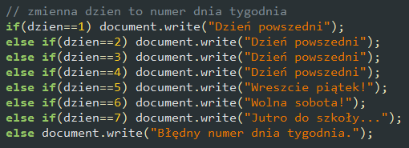
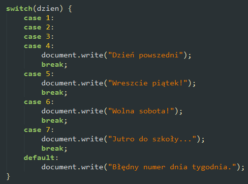

Switch
W pewnych przypadkach zamiast wielu instrukcji if lub if...else możesz użyć instrukcji switch (przełącznika).
Przykład. Zamiast wielu instrukcji if...else
użyj instrukcji switch
Elementy instrukcji:
- switch - słowo kluczowe, w nawiasie znajduje się wyrażenie, które zwraca liczbę całkowitą (np. 1, 2) lub pojedynczy znak (np. "a", "B").
- case - poszczególne przypadki wartości zwróconej przez wyrażenie w nawiasie, można grupować po kilka przypadków (gdy powinny się wykonać identyczne instrukcje).
- break - przerywa wykonywanie instrukcji znajdujących się niżej w bloku switch i przechodzi do instrukcji znajdującej się po tym bloku.
- default - instrukcje po tym słowie kluczowym wykonają się, gdy zwrócona wartość z nawiasu nie odpowiada żadnemu z przypadków (case). Instrukcja default jest opcjonalna (może nie wystąpić).
Zadanie 5.
W bloku znajdującym się niżej dołącz skrypt, w którym zdefiniujesz zmienną przechowującą numer miesiąca w roku, a następnie wyświetlisz, do której pory roku należy miesiąc o tym numerze. Przykład:
Miesiąc o numerze 10 to jesień.
Jeżeli użytkownik podał nieprawidłowy numer miesiąca, skrypt wyświetla komunikat
Miesiąc o numerze 13 nie istnieje.